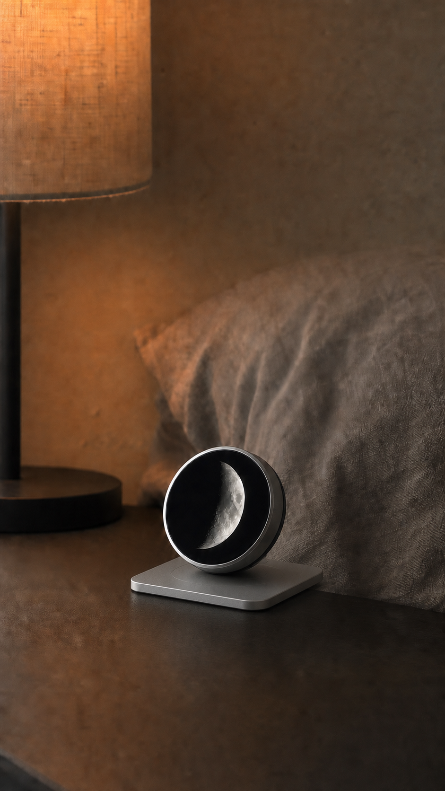

▶01 · Moon · 12 seconds
Your phone has a calendar. Your evening needs a sky.
Before you ask your night to do more, look up. LunaSay turns the Moon into one calm, tactile glance—no feed, no forecast of your productivity, just a little more orientation. What would change if you checked the sky before you checked your phone?
CTA: Follow LunaSay for the first light.